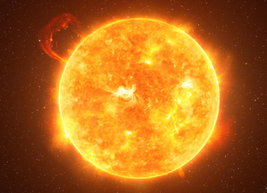
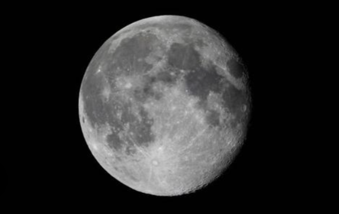
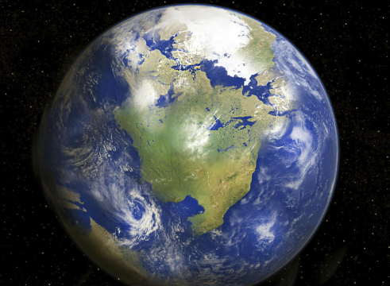
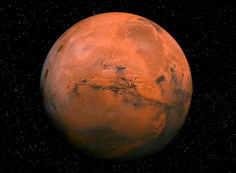
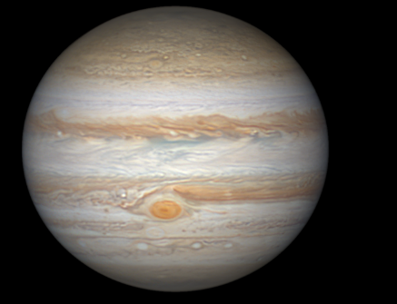
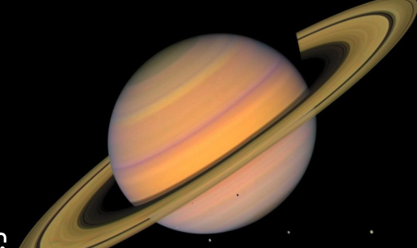
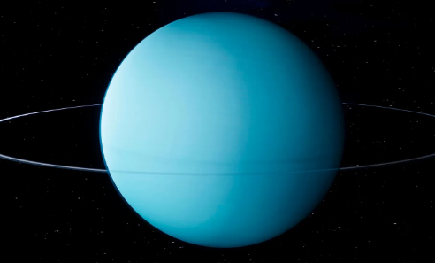
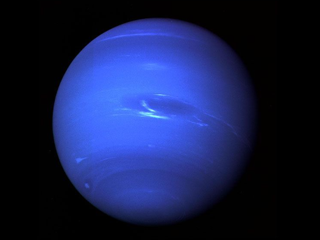

Die Sonne wird irgendwann die Erde verschlucken! In etwa 5 Milliarden Jahren wird die Sonne ihren Wasserstoffvorrat aufgebraucht haben und sich in einen riesigen roten Riesen verwandeln. In dieser Phase wird sie die Erde wohl „verschlingen“, wenn sie sich ausdehnt. Keine Sorge, das passiert noch lange nicht, aber es ist ein ziemlich krasser Gedanke!
Nahaufnahmen der Sonne
Der Mond riecht wie... verbrannte Schießpulver! Astronauten, die den Mond betreten haben, berichten, dass der Mondstaub einen sehr ungewöhnlichen Geruch hat – irgendwie wie verbranntes Schießpulver oder Metall. Also keine blumigen Düfte oder frische Luft, wenn du mal auf dem Mond spazieren gehst!
10 verblüffende Fakten zum Mond
Die Erde „singt“! Die Erde produziert tatsächlich Schwingungen und Töne, die als „Erdbeben-Schwingungen“ bezeichnet werden. Aber keine Sorge, es ist nicht wie ein Orgelkonzert oder Popmusik, sondern eher wie eine Art stiller „Gesang“ – und du kannst ihn nur hören, wenn du auf sehr empfindlichen Geräten lauschst. Es ist so, als würde die Erde heimlich Musik spielen, während wir schlafen!
Erdgeräusche
Mars ist der „King der Staubstürme!“ Die Staubstürme auf dem Mars sind so heftig, dass sie den ganzen Planeten einhüllen können – bis zu Wochen lang! Stell dir vor, du gehst spazieren und plötzlich wird es dunkel wie mitten in der Nacht, weil der Mars seine eigene Version von „Schmuddelwetter“ bietet. Der Mars könnte in einer Staubstorm-Weltmeisterschaft locker den ersten Platz holen!
Bilder vom Mars
Jupiter ist so schwer, dass er „hinterlässt“ eine Spur im Universum! Jupiter hat so viel Masse, dass er die Umlaufbahn der Erde minimal beeinflusst. Wenn er sich bewegt, fühlt das sogar die Erde! Stell dir vor, der Jupiter ist wie der riesige "Elefant" im Raum, der ständig eine kleine Vibration durch das Universum schickt – aber keine Sorge, er ist ein netter Elefant, der keine größeren Probleme macht.

Saturn hat die besten „Ringe“ im Universum! Saturn ist bekannt für seine fantastischen Ringe – und die sind so beeindruckend, dass sie wirklich wie das „Accessoire des Jahres“ wirken. Es ist fast so, als hätte der Planet beschlossen, eine „Mega-Party zu schmeißen“ und sich mit den schönsten Ringen zu schmücken. Und nein, es sind keine Diamantringe, sondern aus Staub, Eis und Gestein – aber sie sind trotzdem super cool!

Uranus ist „liegend“ unterwegs! Der Uranus hat eine sehr ungewöhnliche Achsenneigung – er ist fast auf der Seite liegend! Stell dir vor, du rollst auf deinem eigenen Planeten herum, als wärst du der coole Typ, der gegen alle Regeln verstößt. Andere Planeten rotieren „ganz brav“ um ihre Achsen, aber Uranus sagt einfach: „Ich mach‘ mein eigenes Ding!“

Neptun ist der Windkönig Er hat die stärksten Winde im Sonnensystem – bis zu 2.100 km/h. Das ist schneller als der Schall (aber wegen der dünnen Atmosphäre kein Überschallknall). Wenn du dort einen Drachen steigen lassen willst – vergiss es. Du bist weg, bevor du „Whoosh“ sagen kannst.
Mehr dazu